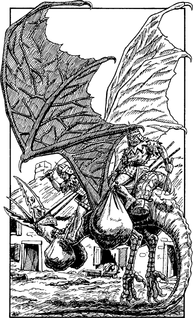

120
Silently you slip from the saddle and peer around the corner. In the middle of the street beyond, a company of Giak scouts are sifting through items they have looted from the village. Two of the evil creatures are loading their booty onto the back of a Kraan, a large, black-winged creature, while the others cram their ill-gotten gains in their pockets and packs. What they cannot carry they delight in despoiling, leaving behind a trail of filth and debris in the buildings they have ransacked.
‘Oka der!’ shouts their officer, brandishing a long, black sword with a jagged edge. ‘Akamaza ek!’ His greedy soldiers are reluctant to obey his commands, but a few blows with the flat of his blade quickly change their minds. Muttering and snarling, they scurry off into a side alley, reappearing a few minutes later astride large, grey wolves. ‘Rekenara kluz!’ growls the officer, and the pack ride out of the village, heading north along the bank of the River Churdas.

The Kraan and its two riders take to the air, but the beast is so overburdened with loot that it cannot clear the rooftops. Frantically it beats its leathery wings, hovering erratically just a few feet off the ground. The Giaks urge it on with kicks and punches, but to no avail. Suddenly it lurches forward and the Giaks tumble head-first onto the cobblestones a few feet from where you stand. ‘Orgadaka!’ they cry, as they catch sight of you and Banedon hiding at the corner.
If you have a Bow and wish to use it, turn to 12.
If you wish to attack the Giaks with a hand weapon before they have a chance to stand, turn to 285.
If you choose to avoid combat by remounting your horse and galloping along the track that leads out of the village, turn to 63.